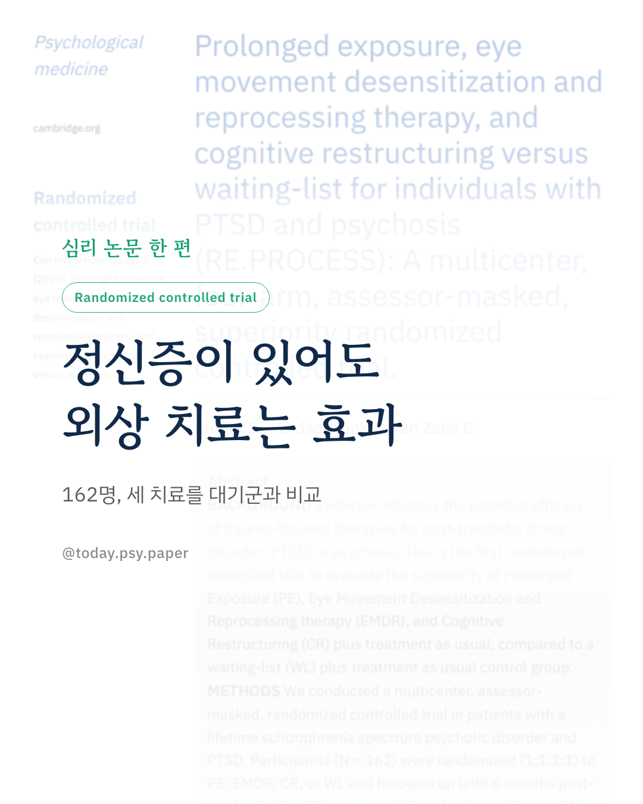
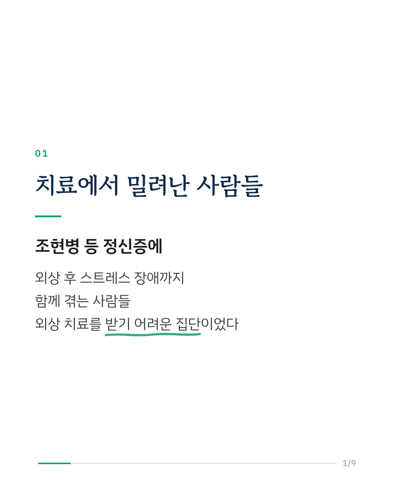
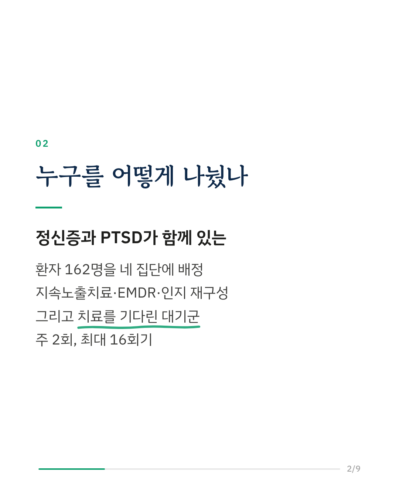
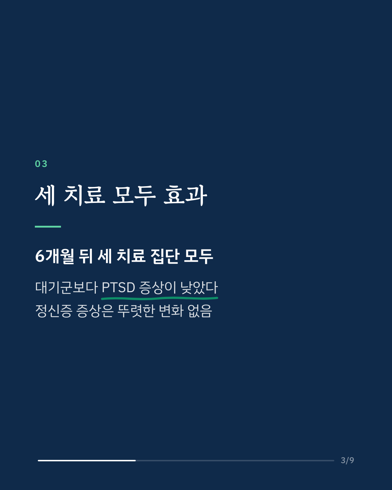
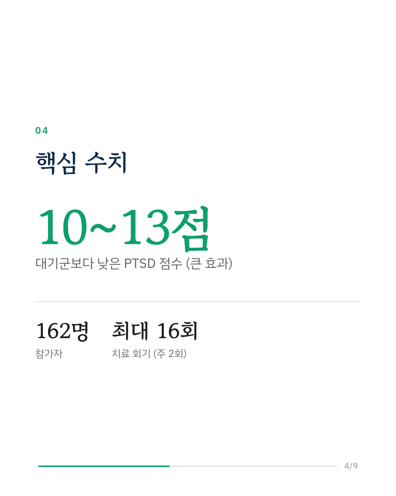
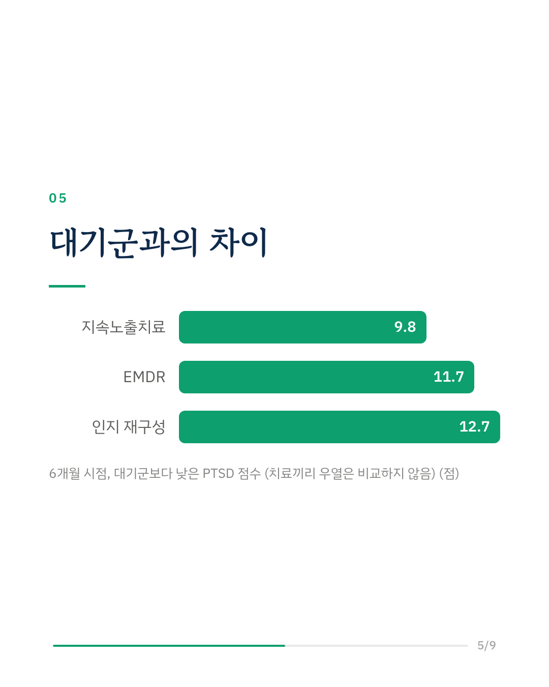
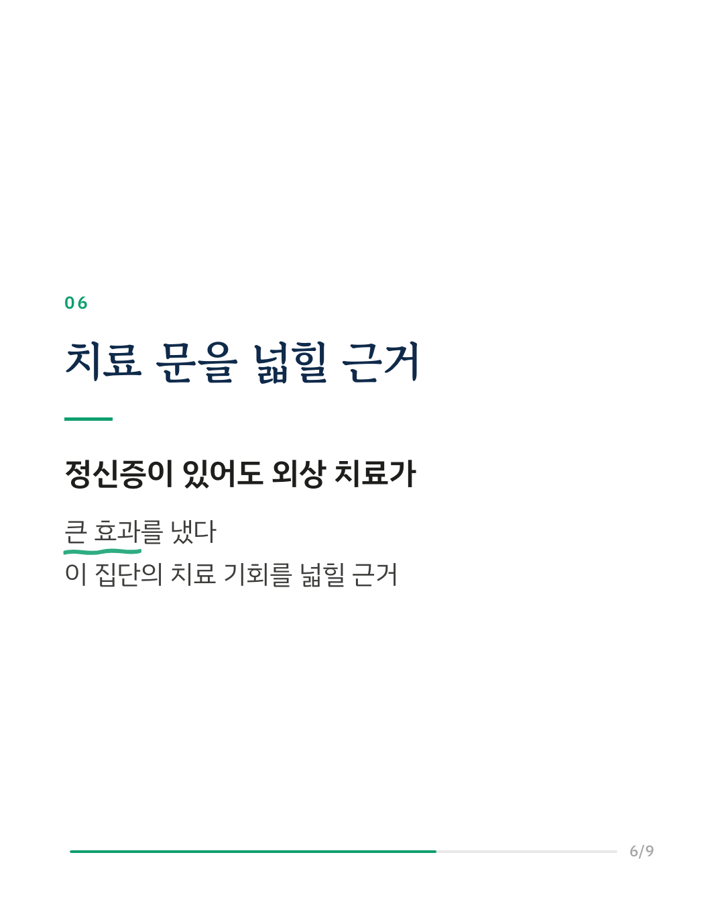
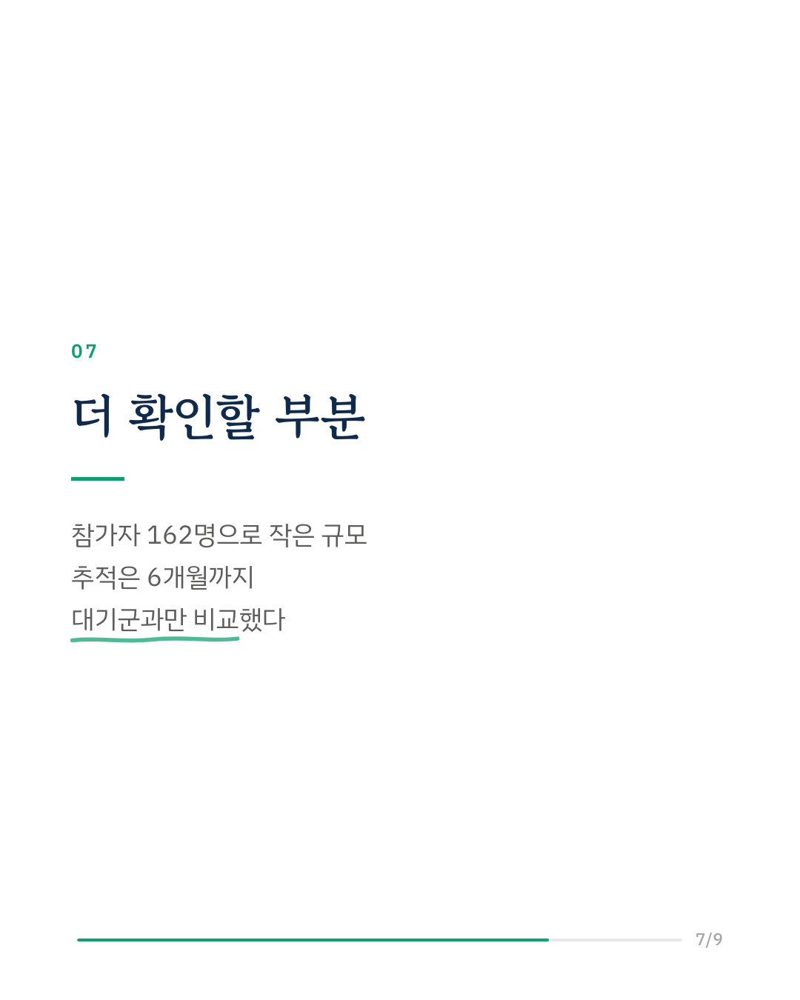
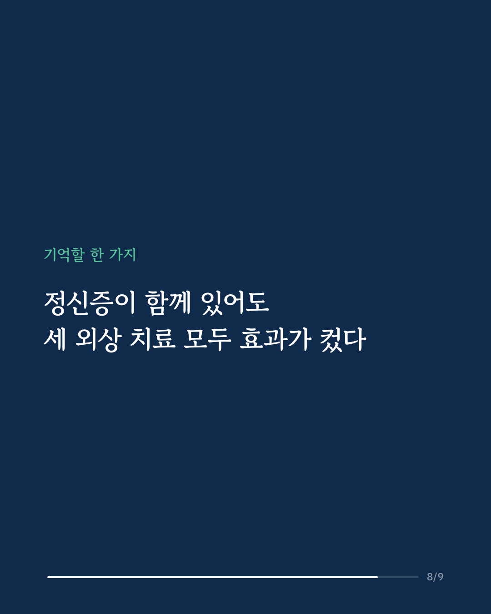
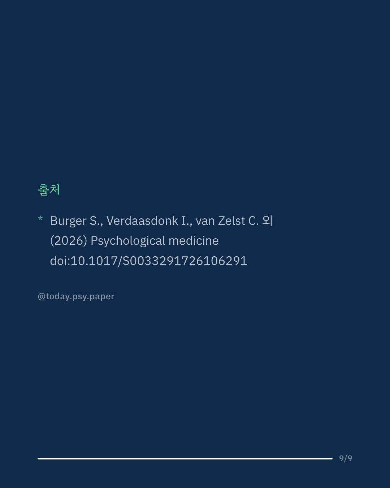

조현병 같은 정신증이 있는 사람 가운데 외상 후 스트레스 장애(PTSD)를 함께 겪는 경우가 적지 않습니다. 그런데 이분들은 외상 치료를 받을 기회가 적은 집단이었습니다. 네덜란드 연구진이 정신증과 PTSD가 함께 있는 환자 162명을 지속노출치료, EMDR, 인지 재구성, 대기군의 네 집단에 무작위로 나눴습니다. 치료는 주 2회, 최대 16회기였고, 배정을 모르는 평가자가 증상을 쟀습니다. 6개월 뒤 세 치료 집단 모두 대기군보다 PTSD 점수가 10~13점 낮았고, 효과의 크기는 큰 편이었습니다. 정신증 증상에는 뚜렷한 차이가 없었습니다. 연구진은 이 결과가 정신증이 있는 사람에게도 외상 치료를 넓혀야 한다는 쪽을 지지한다고 말합니다. 다만 비교 대상이 대기군뿐이어서, 세 치료 가운데 어느 쪽이 더 나은지는 알 수 없습니다. 출처: Psychological Medicine (2026), 'Prolonged exposure, eye movement desensitization and reprocessing therapy, and cognitive restructuring versus waiting-list for individuals with PTSD and psychosis (RE.PROCESS): A multicenter, four-arm, assessor-masked, superiority randomized controlled trial.' DOI: 10.1017/S0033291726106291 #임상심리 #정신건강정보 #심리학연구 #논문리뷰 #외상후스트레스장애 #트라우마치료 #정신증 #조현병
python3 publish.py 43000852